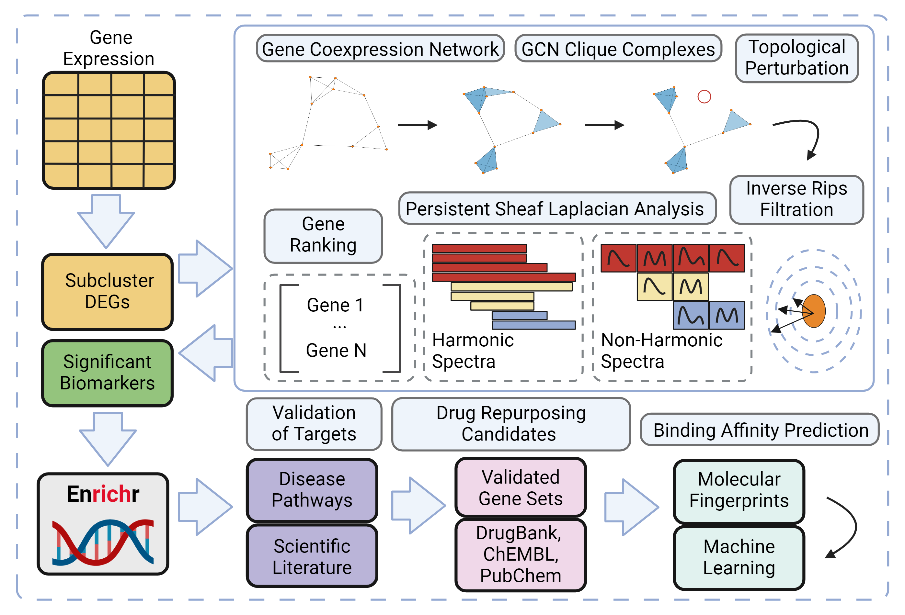

This is a novel approach to biomarker discovery that makes use of Persistent Sheaf Laplacians, a next generation tool in Topological Data Analysis, to study the topological and geometric structure of gene co-expression networks for the purpose of identifying molecular targets.
Given the list of identified biomarkers, say APOE4 and CSF1R for Alzheimer's Disease, the method pivots to a Machine Learning based drug repurposing task, where we hope to identify a set of compounds that can be potentially repurposed to treat our disease.
Ultimately in our analysis of Alzheimer's the model was successful in identifying ... drugs that could serve as promising therapeutic candidates for targeting these molecular pathways / biomarkers.